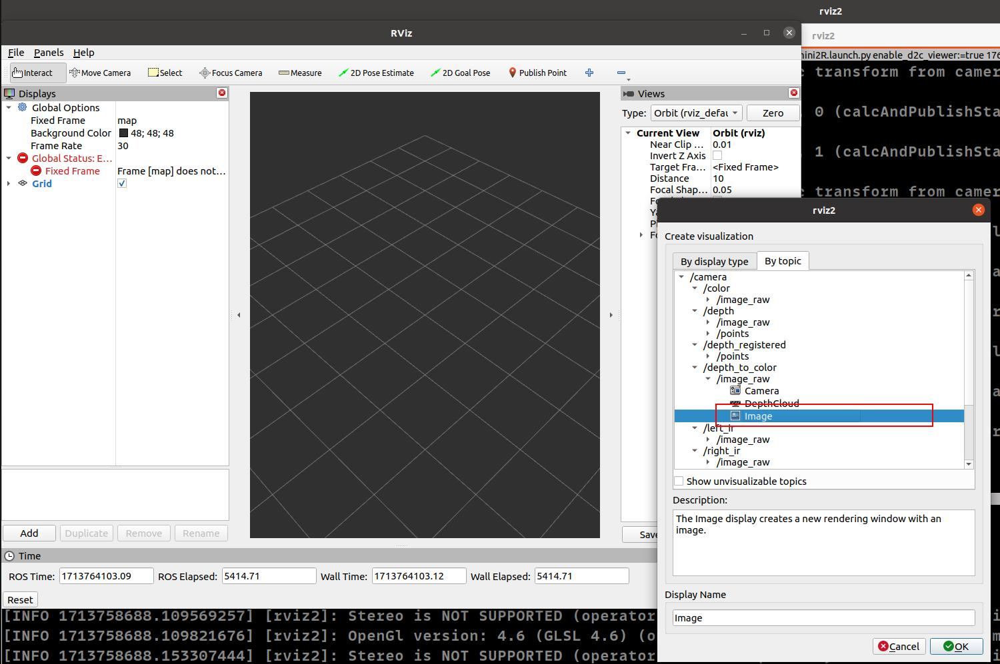

3.1. Single camera
This guide provides instructions on how to launch the camera node with a colored point cloud feature enabled using ROS 2.
Table of contents
3.1.1. Start single camera
For how to compile and build methods, please refer to Chapter Installation/Build_the_package documentation and follow the steps provided
build_the_package
Command to start single camera node
On terminal 1: Launch camera node, example of gemini330 series :
cd ~/ros2_ws/
source /opt/ros/$ROS_DISTRO/setup.bash
source install/setup.bash
ros2 launch orbbec_camera orbbec_camera.launch.py config_file_path:=gemini330_series.yaml
config_file_path:=gemini330_series.yaml means orbbec_camera.launch.py uses the parameters set in gemini330_series.yaml
3.1.2. Launch parameters
For the definition and function of launch parameters, please refer to common.yaml. All open parameters are in common.yaml.The following is a partial common.yaml display:
# config/*.yaml files are used to configure the camera parameters
---
orbbec_ros:
camera_parameters:
general:
# Camera model. upport product models by referencing config/*.yaml
camera_model: "gemini330_series"
# The configuration file for yaml params.
config_file_path: "gemini330_series.yaml"
# Log level. Supported levels are 'debug', 'info', 'warning' and 'error'. Default is 'none'.
log_level: "none"
deivce:
# camera name, usually overwritten by launch file
camera_name: "camera"
# camera serial number, usually overwritten by launch file
serial_number: ""
# The USB port of the camera. This parameter is required when using multiple cameras.
usb_port: ""
# Number of devices. If multiple cameras are required, this parameter must be filled in launch file
device_num: 1
# Optional values: v4l2, libuvc
uvc_backend: "libuvc"
# Usually no need to change
vendor_id: "0x2bc5"
Notice:If you run orbbec_camera.launch.py, the default combination of launch parameters used is common.yaml+gemini330_series.yaml, and the parameters in gemini330_series.yaml have higher priority than common.yaml
3.1.3. Visualizing data in rviz2
view_display launch
view_display.launch.py supports loading different .rviz files through yaml configuration. For example, loading the default .rviz file to display four streams. config in different .model.yaml files through yaml configuration.
On terminal 2:
cd ~/ros2_ws/
source /opt/ros/$ROS_DISTRO/setup.bash
source install/setup.bash
ros2 launch orbbec_description view_display.launch.py camera_model:=gemini335_336

view_model launch
view_model.launch.py supports loading different .model.yaml files through yaml configuration. For example, loading the default model file to display gemini335_336 model .
On terminal 3:
cd ~/ros2_ws/
source /opt/ros/$ROS_DISTRO/setup.bash
source install/setup.bash
ros2 launch orbbec_description view_model.launch.py camera_model:=gemini335_336
Or you can run rviz2 and configure it by yourself
cd ~/ros2_ws/
source /opt/ros/$ROS_DISTRO/setup.bash
source install/setup.bash
rviz2
When runing rviz2, select the topic you wish to visualize from the list of published topics. Add the selected topic to rviz2 to start viewing the data.
3.1.4. Display view topic/service/param
Once the camera node is running, it will publish data on several ROS topics. Below is a list of the available topics:
By executing ros2 topic list, the following topics are displayed:
On terminal 4:
ros2 topic list
Other , to display services/ parameters , example as follows
ros2 service list
ros2 param list
Get device info:
ros2 service call /camera/get_device_info orbbec_camera_msgs/srv/GetDeviceInfo '{}'
Get SDK version:
ros2 service call /camera/get_sdk_version orbbec_camera_msgs/srv/GetString '{}'
Set auto exposure:
ros2 service call /camera/set_color_auto_exposure std_srvs/srv/SetBool '{data: false}'
Save point cloud:
ros2 service call /camera/save_point_cloud std_srvs/srv/Empty "{}"
3.1.5. Example visualizations
Here are examples of how the visualization might appear in rviz2:
PointCloud Visualization

Image Data Visualization

3.1.6. Aligning Depth to Color
3.1.6.1. Commands to Align and View Depth and Color Images
Basic Depth to Color Alignment: To simply align the depth image to the color image, use the following command:
ros2 launch orbbec_camera gemini_330_series.launch.py depth_registration:=true
This command activates the depth registration feature without opening a viewer.
Viewing Depth to Color Overlay: If you wish to view the depth to color overlay, you need to enable the viewer by using the command below:
ros2 launch orbbec_camera gemini_330_series.launch.py depth_registration:=true enable_d2c_viewer:=true
This launches the camera node with depth to color registration and opens a viewer to display the overlay image.
3.1.6.2. Selecting Topics in RViz2
To visualize the aligned images in RViz2:
Launch RViz2 after running one of the above commands.
Select the topic for the depth to color overlay image. An example topic selection is shown here:

3.1.6.3. Example of Depth to Color Overlay
After selecting the appropriate topic in RViz2, you will be able to see the depth to color overlay image. Here’s what it might look like:

3.1.7. Enabling and Visualizing Point Cloud
3.1.7.1. Enabling Depth Point Cloud
3.1.7.1.1. Command to Enable Depth Point Cloud
To activate the point cloud data stream for depth information, use the following command:
ros2 launch orbbec_camera gemini_330_series.launch.py enable_point_cloud:=true
3.1.7.1.2. Visualizing Depth Point Cloud in RViz2
After running the above command, perform the following steps to visualize the depth point cloud:
Open RViz2.
Add a
PointCloud2display.Select the
/camera/depth/pointstopic for visualization.Set the fixed frame to
camera_linkto properly align the data
3.1.7.1.3. Example Visualization
Here is what the depth point cloud might look like in RViz2:

3.1.7.2. Enabling Colored Point Cloud
3.1.7.2.1. Command to Enable Colored Point Cloud
To enable the colored point cloud feature, enter the following command:
ros2 launch orbbec_camera gemini_330_series.launch.py enable_colored_point_cloud:=true
3.1.7.2.2. Visualizing Colored Point Cloud in RViz2
To visualize the colored point cloud data:
Launch RViz2 following the command execution.
Add a
PointCloud2display panel.Choose the
/camera/depth_registered/pointstopic from the list.Ensure the fixed frame is set to
camera_link.
3.1.7.2.3. Example Visualization
The result of the colored point cloud in RViz2 should look similar to this:

3.1.8. TF tree diagram
To get the TF tree
ros2 run rqt_tf_tree rqt_tf_tree --force-discover
The TF tree diagram for the OrbbecSDK_ROS2 is illustrated below:
<!-- docs/source/3_start_single_camera/start_single_camera.md -->